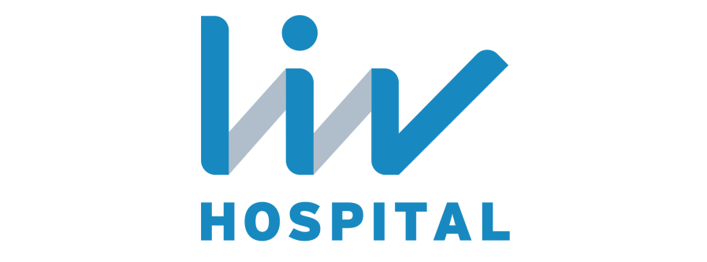

Почему Турция для агентств?
Готовы обсудить партнёрство? Давайте поговорим сегодня.
Связаться с намиТурция стремительно становится одним из ведущих направлений медицинского туризма, предлагая медицинские услуги высокого качества, доступное лечение, современные медицинские учреждения и высокий уровень жизни. Благодаря чистой воде, низкому уровню загрязнения воздуха, богатому культурному наследию и историческим достопримечательностям Турция предлагает и медицинскую помощь, и туристические возможности в одном месте.
Многие больницы с международной аккредитацией оснащены новейшим медицинским оборудованием, лабораториями высочайшего стандарта, современными операционными и высококвалифицированными медицинскими специалистами, а сервис здесь — на уровне пятизвёздочного отеля.
В здравоохранении одних лучших врачей недостаточно. Лучшие результаты лечения достигаются, когда специалисты разных областей работают вместе, применяя междисциплинарный подход.
Чем мы занимаемся
Если вы — агентство медицинского туризма или международный поставщик медицинских услуг, направляющий пациентов в Турцию, мы выступаем вашим местным представителем и помогаем заключать наиболее подходящие для ваших пациентов соглашения с больницами и медицинскими учреждениями.
Мы ведём переговоры от вашего имени, сопровождаем на каждом этапе процесса и помогаем решать любые возникающие вопросы.
Стоимость услуг
Наше вознаграждение определяется совместно в зависимости от вида и уровня поддержки, который вам требуется.
Некоторые больницы и клиники Турции
